email
- github
- google scholar
- twitter
About Me
I am an HCI Researcher and a Postdoctoral Fellow in the Dynamic Graphics Project Lab at the University of Toronto working with Professor Tovi Grossman.
Previously, I was a researcher at the Visualization and Intelligent Multimodal Interfaces Group at INESC-ID Lisbon under the supervision of Professor Joaquim Jorge.
I received my PhD, MSc and B.Sc. degrees in Computer Science and Engineering from Técnico Lisboa / University of Lisbon.
In my research, I have been designing and evaluating novel interaction techniques for the engineering, architecture and medical fields, focussing on computer supported remote collaborative work in Mixed Reality environments. I also have experience in 3D user interfaces, interactive spaces, touch and mid-air gestures.
I have been fortunate to see my research published in top international conferences and journals, such as ACM CHI, ACM UIST, ACM ISS, ACM IUI, ACM VRST, INTERACT, IJHCS, IEEE TVCG, and IEEE VR. I am currently a member of the organising committee of the international conference ACM ISS 2022 and IEEE VR 2023. I am also an organizing member of the Enhancing Cross-reality Applications and User Experiences Workshop at AVI 2022.
Publications
Conference Papers
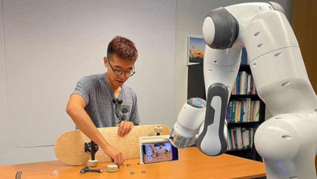
Stargazer: An Interactive Camera Robot for Capturing How-To Videos Based on Subtle Instructor Cues.
Jiannan Li, Mauricio Sousa, Karthik Mahadevan, Bryan Wang, Paula Akemi Aoyagui, Nicole Yu, Angela Yang, Ravin Balakrishnan, Anthony Tang, and Tovi Grossman.
ACM Conference on Human Factors in Computing Systems (CHI), 2023.
Soon
Investigating Guardian Awareness Techniques to Promote Safety in Virtual Reality.
Sixuan Wu, Jiannan Li, Maurício Sousa, and Tovi Grossman.
IEEE Conference on Virtual Reality and 3D User Interfaces (IEEE VR), 2023.
Conditionally Accepted
Soon
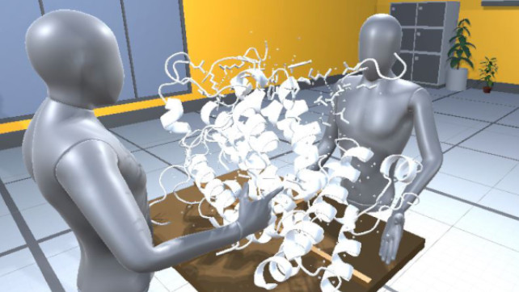
MAGIC: Manipulating Avatars and Gestures to Improve Remote Collaboration.
Catarina Fidalgo, Mauricio Sousa, Daniel Mendes, Rafael dos Anjos, Daniel Medeiros, Karan Singh, and Joaquim Jorge.
IEEE Conference on Virtual Reality and 3D User Interfaces (IEEE VR), 2023.
Conditionally Accepted
Soon
Touching The Droid: Understanding and Improving Touch Precision With Mobile Devices in Virtual Reality.
Fengyuan Zhu, Zhuoyue Lyu, Mauricio Sousa, and Tovi Grossman.
IEEE International Symposium on Mixed and Augmented Reality (ISMAR), 2022
Paper
-
Presentation
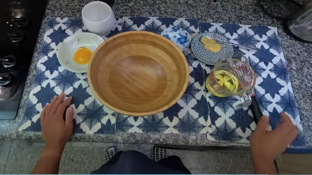
immersivePOV: Filming How-To Videos with a Head-Mounted 360° Action Camera.
Kevin Huang, Jiannan Li, Maurício Sousa, and Tovi Grossman.
ACM CHI Conference on Human Factors in Computing Systems (CHI), 2022
✱ CHI 2022 Honorable Mention Award
Paper
-
Video
-
Presentation
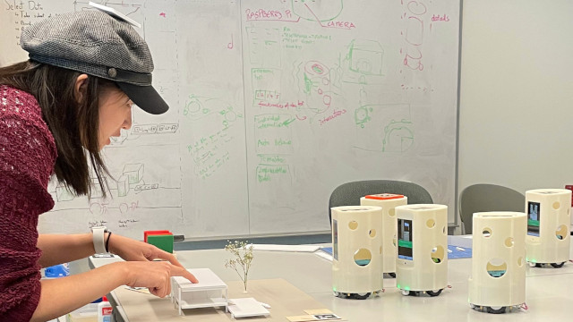
ASTEROIDS: Exploring Swarms of Mini-Telepresence Robots for Physical Skill Demonstration.
Jiannan Li, Maurício Sousa, Chu Li, Jessie Liu, Yan Chen, Ravin Balakrishnan, and Tovi Grossman.
ACM CHI Conference on Human Factors in Computing Systems (CHI), 2022
Paper
-
Video
-
Presentation
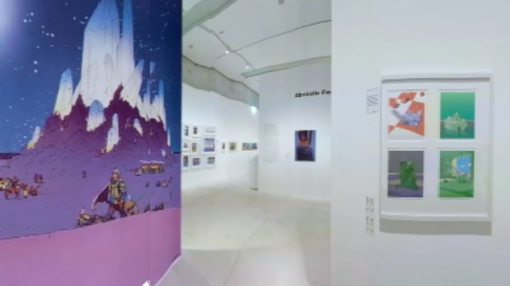
Route Tapestries: Navigating 360° Virtual Tour Videos Using Slit-Scan Vizualizations.
Jiannan Li, Jiahe Lyu, Maurício Sousa, Ravin Balakrishnan, Anthony Tang, and Tovi Grossman.
ACM Symposium on User Interface Software and Technology (UIST), 2021
Paper
-
Video
-
Presentation
Promoting Reality Awareness in Virtual Reality through Proxemics.
Daniel Medeiros, Rafael dos Anjos, Nadia Pantidi, Kun Huang, Maurício Sousa, Craig Anslow, and Joaquim Jorge.
IEEE Conference on Virtual Reality and 3D User Interfaces (VR), 2021
Paper
-
Presentation
“Grip-that-there”: An Investigation of Explicit and Implicit Task Allocation Techniques for Human-Robot Collaboration.
Karthik Mahadevan, Maurício Sousa, Anthony Tang, and Tovi Grossman.
ACM CHI Conference on Human Factors in Computing Systems (CHI), 2021
✱ CHI 2021 Honorable Mention Award
Paper
-
Video
-
Presentation
Safe Walking in VR.
Maurício Sousa, Daniel Mendes, and Joaquim Jorge.
ACM SIGGRAPH International Conference on Virtual-Reality Continuum and its Applications in Industry (VRCAI), 2019
Paper
Negative Space: Investigating Workspace Awareness in 3D Face-to-face Remote Collaboration.
Maurício Sousa, Daniel Mendes, Rafael Kuffner dos Anjos, Daniel Simões Lopes, and Joaquim Jorge.
ACM SIGGRAPH International Conference on Virtual-Reality Continuum and its Applications in Industry (VRCAI), 2019
Paper
Adventures in Hologram Space: Exploring the Design Space of Eye-to-eye Volumetric Telepresence.
Rafael Kuffner dos Anjos, Maurício Sousa, Daniel Medeiros, Daniel Mendes, Mark Billinghurst, Craig Anslow, and Joaquim Jorge.
ACM Symposium on Virtual Reality Software and Technology (VRST), 2019
Paper
-
Video
Warping Deixis: Distorting Gestures to Enhance Collaboration.
Maurício Sousa, Rafael Kuffner dos Anjos, Daniel Mendes, Mark Billinghurst, and Joaquim Jorge.
ACM Conference on Human Factors in Computing Systems (CHI), 2019
✱ Featured in the ’Best of CHI 2019’ event by IndiaHCI
Paper
-
Video
-
Presentation
Investigating Workspace Awareness in 3D Face-to-Face Remote Collaboration.
Maurício Sousa, Daniel Mendes, Rafael Kuffner dos Anjos, and Joaquim Jorge.
International Conference on Graphics and Interaction (ICGI), 2018
Paper
Using Custom Transformation Axes for Mid-Air Manipulation of 3D Virtual Objects.
Daniel Mendes, Maurício Sousa, Rodrigo Lorena, Alfredo Ferreira, and Joaquim Jorge
ACM Symposium on Virtual Reality Software and Technology (VRST), 2017
Paper
Creepy Tracker Toolkit for Context-aware Interfaces.
Maurício Sousa, Daniel Mendes, Rafael Kuffner dos Anjos, Daniel Medeiros, Alberto Raposo, Alfredo Ferreira, João Pereira, and Joaquim Jorge.
ACM Interactive Surfaces and Spaces (ISS), 2017
Paper
-
Video
-
Presentation
-
Code
VRRRRoom: Virtual Reality for Radiologists in the Reading Room.
Maurício Sousa, Daniel Mendes, Soraia Paulo, Nuno Matela, Joaquim Jorge, and Daniel Simões Lopes.
ACM Conference on Human Factors in Computing Systems (CHI), 2017
Paper
-
Video
-
Presentation
PRECIOUS! Out-of-reach Selection using Iterative Refinement in VR.
Daniel Mendes, Daniel Medeiros, Eduardo Cordeiro, Maurício Sousa, Alfredo Ferreira, and Joaquim Jorge.
IEEE Symposium on 3D User Interfaces (3DUI), 2017
Paper
Mid-air Modeling with Boolean Operations in VR.
Daniel Mendes, Daniel Medeiros, Maurício Sousa, Ricardo Ferreira, Alberto Barbosa Raposo, Alfredo Ferreira, and Joaquim Jorge.
IEEE Symposium on 3D User Interfaces (3DUI), 2017
Paper
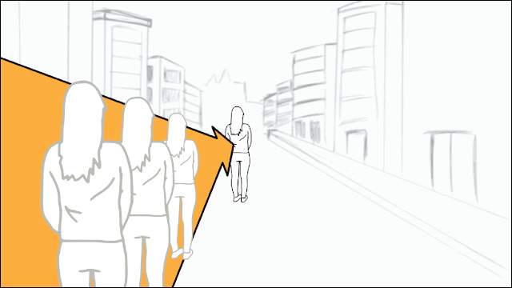
Evaluation of Travel Techniques for Virtual Reality.
Eduardo Cordeiro, Daniel Medeiros, Daniel Mendes, Maurício Sousa, Alberto Raposo, Alfredo Ferreira, and Joaquim Jorge.
Encontro Português de Computação Gráfica (EPCG), 2016
Paper
Effects of Speed and Transitions on Target-based Travel Techniques.
ACM Symposium on Virtual Reality Software and Technology (VRST), 2016
Encontro Português de Computação Gráfica (EPCG), 2016
Paper
Perceiving Depth: Optical versus Video See-through.
Daniel Medeiros, Maurício Sousa, Daniel Mendes, Alberto Raposo, and Joaquim Jorge.
ACM Symposium on Virtual Reality Software and Technology (VRST), 2016
Paper
SleeveAR: Augmented Reality for Rehabilitation using Realtime Feedback.
Maurício Sousa, João Vieira, Daniel Medeiros, Artur Arsénio and Joaquim Jorge.
ACM Intelligent User Interfaces (IUI), 2016
Paper
-
Presentation
From Tecton to Teknos: Going back to the Classical Roots of Architecture.
Daniel Mateus, Maurício Sousa, Rui de Klerk, Sandra Gama, Joaquim Jorge, and José Duarte.
Education and research in Computer Aided Architectural Design in Europe (eCAADe), 2015
Paper
Eery Space: Facilitating Virtual Meetings Through Remote Proxemics.
Maurício Sousa, Daniel Mendes, Alfredo Ferreira, João Madeiras Pereira, and Joaquim Jorge.
INTERACT, 2015
Paper
Beyond Post-It: Structured Multimedia Annotations for Collaborative VEs.
João Guerreiro, Daniel Pires, Maurício Sousa, Daniel Mendes, Ismael Santos, Alberto Raposo, and Joaquim Jorge.
Eurographics Symposium on Virtual Environments (EGVE), 2014
Paper
Eery Proxemics: Proximidade à Distância usando Múltiplas Superfícies.
Maurício Sousa, Daniel Mendes, João Madeiras Pereira, Alfredo Ferreira and Joaquim Jorge.
Encontro Português de Computação Gráfica (EPCG), 2014
Paper
Journal Articles
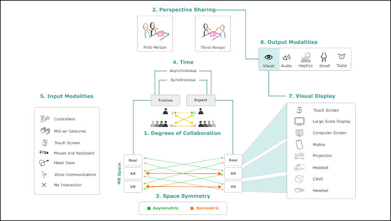
A Survey on Remote Assistance and Training in AR and VR Environments.
Catarina Fidalgo, Yukang Yan, Hyunsung Cho, Mauricio Sousa, David Lindlbauer, and Joaquim Jorge.
To appear in IEEE Transactions on Visualization and Computer Graphics (TVCG), 2023
Conditionally Accepted
Laparoscopy with Augmented Reality Adaptations.
Ezequiel Zorzal, José Miguel Gomes, Maurício Sousa, Pedro Belchior, Pedro G da Silva, Nuno Figueiredo, Daniel S Lopes, and Joaquim A Jorge.
Elsevier Journal of Biomedical Informatics, 2020
Paper
Anatomy Studio: a Tool for Virtual Dissection Through Augmented 3D Reconstruction.
Ezequiel Zorzal, Maurício Sousa, Daniel Mendes, Rafael dos Anjos, Daniel Medeiros, Soraia Paulo, Pedro Rodrigues, José Mendes, Vincent Delmas, Jean-Francois Uhl, José Mogorrónd, Joaquim Jorge, and Daniel Simões Lopes.
Computers & Graphics (In Press), 2019
Paper
-
Video
Magic Carpet: Interaction Fidelity for Flying in VR.
Daniel Medeiros, Maurício Sousa, Alberto Raposo and Joaquim Jorge.
IEEE Transactions on Visualization and Computer Graphics (TVCG), 2019
✱ Recipient of the Encarnação Award 2020, Eurographics Portuguese chapter
Paper
-
Presentation
Design and evaluation of novel out-of-reach selection techniques for VR using iterative refinement.
Daniel Mendes, Daniel Medeiros, Maurício Sousa, Eduardo Cordeiro, Alfredo Ferreira, and Joaquim Jorge.
Computers & Graphics (In Press), 2017
✱ Honourable Mention in the 33rd Spring Conference on Computer Graphics
Paper
Hip-directed walking-in-place using a single depth camera.
Luís Bruno, Maurício Sousa, Alfredo Ferreira, João Madeiras Pereira, and Joaquim Jorge.
International Journal of Human-Computer Studies (IJHCS), Elsevier, 2017
Paper
Expeditious Illustration of Layer-Cake Models On and Above a Tactile Surface.
Daniel S. Lopes, Daniel Mendes, Maurício Sousa, and Joaquim Jorge.
Computers & Geosciences (in press), 2016
Paper
Book Chapters
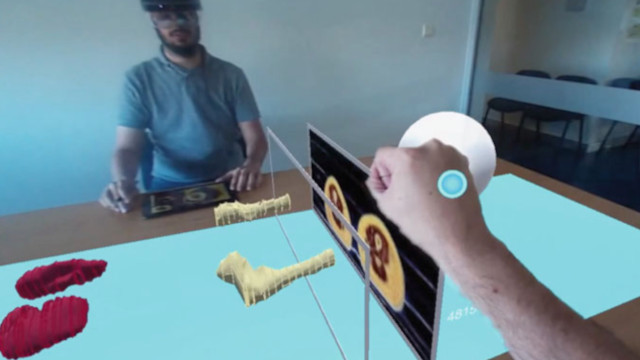
A Tool for Collaborative Anatomical Dissection
Ezequiel Zorzal, Maurício Sousa, Daniel Mendes, Soraia Paulo, Pedro Rodrigues, Joaquim Jorge, and Daniel Simões Lopes.
Digital Anatomy, Springer, 2021
Paper
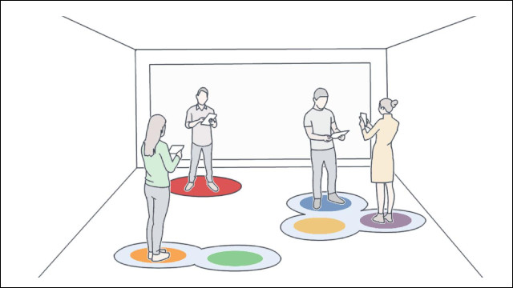
Remote Proxemics.
Maurício Sousa, Daniel Mendes, Daniel Medeiros, Alfredo Ferreira, João Madeiras Pereira and Joaquim Jorge.
Collaboration Meets Interactive Spaces, Springer, 2016
Paper
Other Peer Reviewed Publications
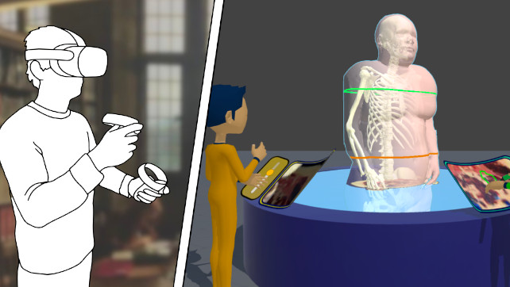
Anatomy Studio II: A Cross-Reality Application for Teaching Anatomy.
Joaquim Jorge, Pedro Belchior, Abel Gomes, Maurício Sousa, João Pereira, and Jean-François Uhl.
XR for Healthcare and Wellbeing Workshop Workshop (IEEE VR), 2022
Paper
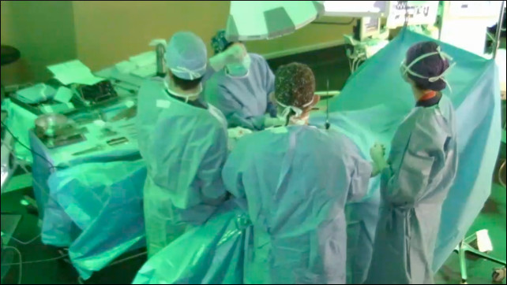
Design requirements to improve laparoscopy via XR.
Ezequiel R Zorzal, Maurício Sousa, Pedro Belchior, João Madeiras Pereira, Nuno Figueiredo, and Joaquim Jorge.
XR for Healthcare and Wellbeing Workshop Workshop (IEEE VR), 2022
Paper
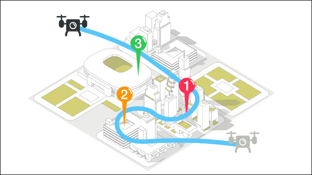
Constellation: a Multi-User Interface for Remote Drone Tours.
Jiannan Li, Maurício Sousa, Ravin Balakrishnan, and Tovi Grossman.
International Conference on Human-Agent Interaction (HAI), 2021
Paper
Demo hour.
Paden Shorey, Audrey Girouard, Sang Ho Yoon, Yunbo Zhang, Ke Huo, Karthik Ramani, Maurício Sousa, Daniel Mendes, Soraia Paulo, Nuno Matela, Joaquim Jorge, Daniel Simões Lopes, Dirk Wenig, Johannes Schöning, Alex Olwal, Mathias Oben, and Rainer Malaka.
Demo hour. interactions 24, 6 (October 2017), 8-11
Paper
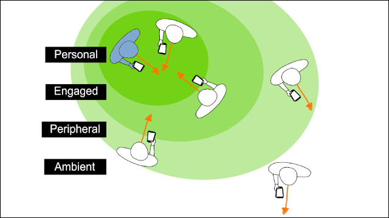
Beyond Eery Space: Applying Gradual Engagement to Remote Proxemics.
Maurício Sousa, Daniel Medeiros, Alberto Raposo, and Joaquim Jorge.
Collaboration meets Interactive Surfaces Workshop, ACM Interactive Tabletops and Surfaces(ITS), 2015
Paper
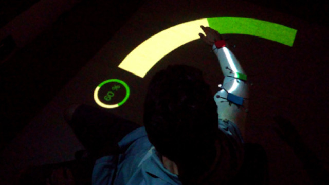
Augmented Reality for Rehabilitation Using Multimodal Feedback.
João Vieira, Maurício Sousa, Artur Arsénio, and Joaquim Jorge.
REHAB2015 Workshop, 2015
Paper
Enabling Remote Proxemics through Multiple Surfaces.
Daniel Mendes, Maurício Sousa, João Madeiras Pereira, Alfredo Ferreira, and Joaquim Jorge.
Collaboration meets Interactive Surfaces Workshop, ACM Interactive Tabletops and Surfaces (ITS), 2014
Paper
ThumbCam: Returning to single touch interactions to explore 3D virtual environments.
Daniel Mendes, Maurício Sousa, Alfredo Ferreira, and Joaquim Jorge.
ACM Interactive Tabletops and Surfaces (ITS), 2014
Paper
Binding an Handheld Device with its Owner.
Maurício Sousa and Joaquim Jorge.
Collaboration meets Interactive Surfaces Workshop, ACM Interactive Tabletops and Surfaces (ITS), 2013
Paper
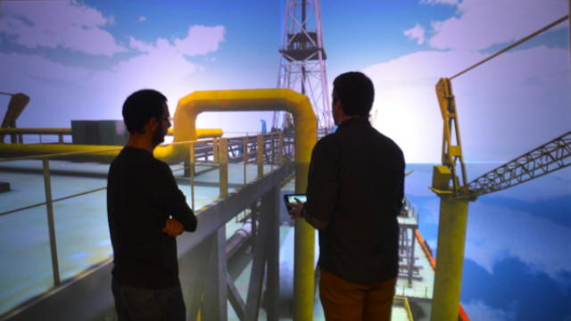
Collaborative 3D Visualization on Large Screen Displays.
Daniel Mendes, Maurício Sousa, Bruno Araújo, Alfredo Ferreira, Hildegardo Noronha, Pedro Campos, Luciano Soares, Alberto Raposo, and Joaquim Jorge.
Powerwall Workshop, ACM CHI Conference on Human Factors in Computing Systems (CHI), 2013
Paper
-
Video
Workshops
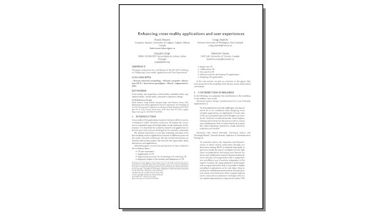
Workshop: Enhancing cross-reality applications and user experiences.
Frank Maurer, Craig Anslow, Joaquim Jorge, and Mauricio Sousa.
International Conference on Advanced Visual Interfaces (AVI 2022).
Workshop
PDF
Theses
Perception Manipulation for Seamless Face-to-face Remote Collaboration.
Maurício Sousa.
Ph.D. Thesis. Instituto Superior Técnico, University of Lisbon.
2020
PDF
-
Presentation
Remote Proxemics for Collaborative Virtual Environments.
Maurício Sousa.
M.Sc. Thesis. Instituto Superior Técnico, University of Lisbon.
2014
PDF
Contact
dgp Lab
Department of Computer Science
University of Toronto
mauriciosousa [at] acm.org